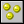
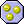
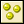

 Set Score
Game Maker has a built-in score mechanism. The score is normally
displayed in the window caption. You can use this action to change the score.
You simply provide the new value for the score. Often you want to add something
to the score. In this case don't forget the check the Relative box.
 Test Score
With this question action you can check whether the score has reached a particular
value. You indicate the value and whether the score should be equal to that value,
be smaller than the value or be larger than the value.
 Draw Score
With this action you can draw the value of the score at a particular position on
the screen. You provide the positions and the caption that must be placed in front
of the score. The score is drawn in the current font. This action can only be used
in the drawing event of an object.
Show Highscore
For each game the top ten scores are maintained. This action displays the highscore
list. If the current score is among the top ten, the new score is inserted and the
player can type his or her name.
You can indicate what background image to use, whether the window
should have a border, what the color for the new entry and the other entries must be,
and which font to use.
Clear Highscore
This action clears the highscore table.
Set Lives
Game Maker also has a built-in lives system. With this action you can
change the number of lives left. Normally you set it to some value like 3 at
the beginning of the game and then decrease or increase the number depending
on what happens. Don't forget to check the Relative box if you want to
add or subtract from the number of lives. At the moment the number of lives
becomes 0 (or smaller than 0) a "no more lives" event is generated.
Test Lives
With this question action you can check whether the number of lives has reached
a particular value. You indicate the value and whether the number of lives should
be equal to that value, be smaller than the value or be larger than the value.
Draw Lives
With this action you can draw the number of lives at a particular position on
the screen. You provide the positions and the caption that must be placed in
front of the number of lives. The number of lives is drawn in the current font.
This action can only be used in the drawing event of an object.
Draw Life Images
Rather than drawing the number of lives left as a number, it is often nicer to
use a number of small images for this. This action does precisely that. You
specify the position and the image and at the indicated position the number of
lives is drawn as images. This action can only be used in the drawing event of an object.
Set Health
Game Maker has a built-in health mechanism. You can use this action to
change the health. A value of 100 is considered full health and 0 is no health
at all. You simply provide the new value for the health. Often you want to
subtract something from the health. In this case don't forget the check the
Relative box. When the health becomes smaller or equal to 0 an out
of health event is generated.
Test Health
With this question action you can check whether the health has reached a
particular value. You indicate the value and whether the health should be
equal to that value, be smaller than the value or be larger than the value.
Draw Health
With this action you can draw the health in the form of a health bar. When
the health is 100 the full bar is drawn. When it is 0 the bar is empty. You
indicate the position and size of the health bar and the color of the bar
and the background.
Score Caption
Normally in the window caption the name of the room and the score is displayed.
With this action you can change this. You can indicate whether or not to show
the score, lives, and/or health and what the caption for each of these must be.